設定 Brevo 外掛
本章節說明如何將 Brevo 整合至您的商店。
安裝並啟用外掛
Brevo 外掛是 nopCommerce 內建的外掛。您可以在 設定 → 本地外掛 找到它。為了更快找到外掛，您可以使用搜尋面板中的 群組 欄位，將外掛篩選為 Misc 類型：
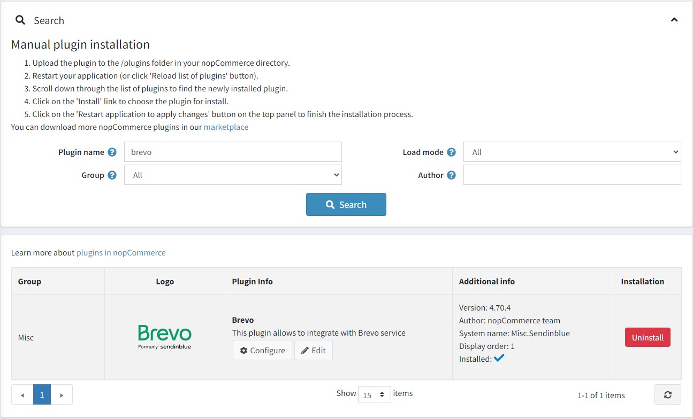
若外掛尚未安裝，請使用 安裝 按鈕進行安裝。接著，點擊 編輯 按鈕來啟用它。在此情況下，您會看到 編輯外掛詳細資料 視窗。使用 已啟用 核取方塊將外掛標記為已啟用，然後點擊 儲存 按鈕。
如何設定此外掛
點擊 Configure 按鈕。您將會看到 Configure - Brevo 視窗：
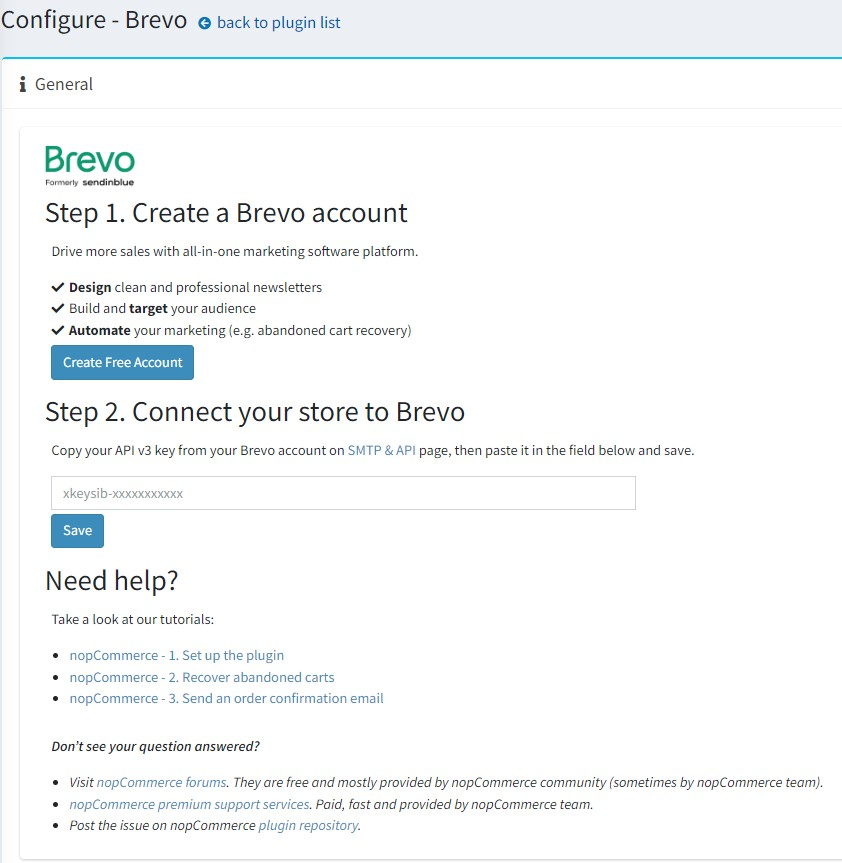
您需要使用 this link 建立一個免費的 Brevo 帳號。
在 SMTP & API 頁面中，輸入來自您 Brevo 帳號的 API v3 key。
點擊 Save 按鈕。
完成上述步驟後，您應該就能看到您的帳號詳細資訊。
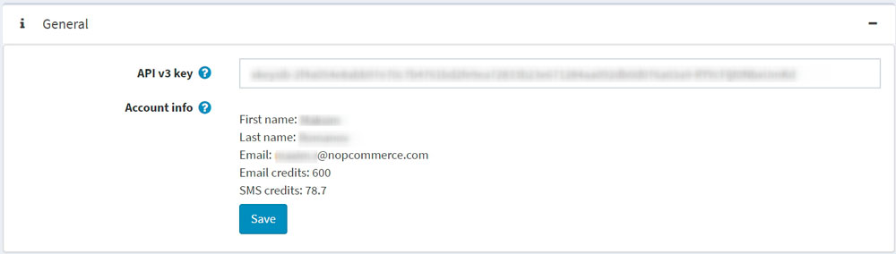
前往 Contacts 面板，將您的 nopCommerce 顧客與您的 Brevo 帳號進行同步。
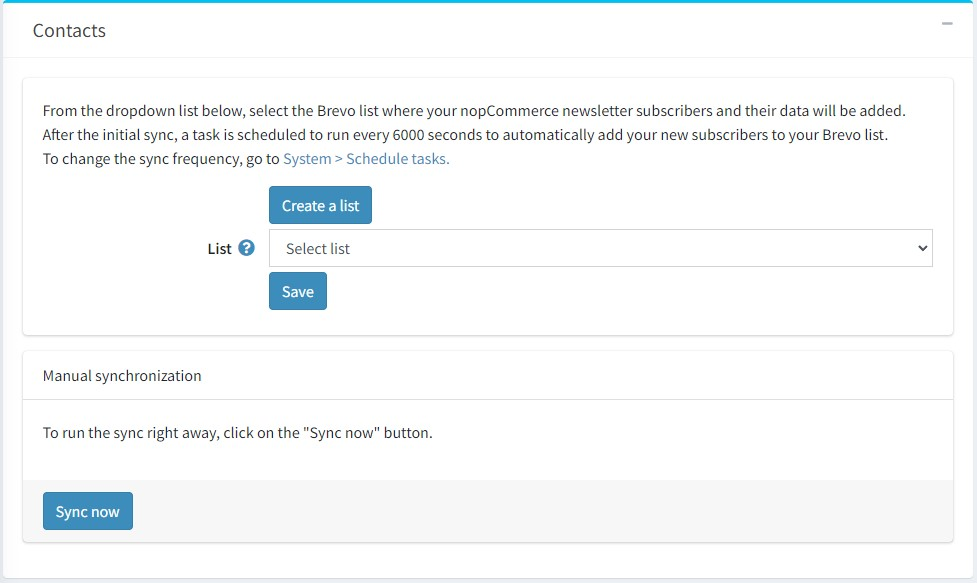
- 若要建立新的 Brevo 清單，請點擊 Create a list 按鈕，這將會導向至您的 Brevo 帳號。
- 從下拉式選單中，選擇要加入 nopCommerce 訂閱者及其聯絡資料的清單。點擊 Save 按鈕。
同步哪些資料？
以下表單欄位會同步為聯絡人屬性：
- FIRSTNAME
- LASTNAME
- SMS
- STORE_ID
- USERNAME
- PHONE
- COUNTRY
- GENDER
- DATE_OF_BIRTH
- COMPANY
- ADDRESS_1
- ADDRESS_2
- ZIP_CODE
- CITY
- COUNTY
- STATE
- FAX
Note
關於同步，請注意這些表單欄位必須為顧客啟用。請前往 設定 → 設定 → 顧客設定 → 顧客表單欄位。
訂單資料會同步為交易屬性：
- ORDER_ID：訂單編號
- ORDER_PRICE：訂單金額
- ORDER_DATE：訂單日期
Note
當訂單的付款狀態為「已付款（Paid）」時才會進行同步。
聯絡人同步的頻率為何？
在初始同步完成後，系統會排程一項工作，每 6000 秒自動將您的新訂閱者加入到您的 Brevo 清單中。
點擊 立即同步 (Sync now) 按鈕即可立即執行同步。
若要變更同步頻率，請前往 系統 → 排程工作。
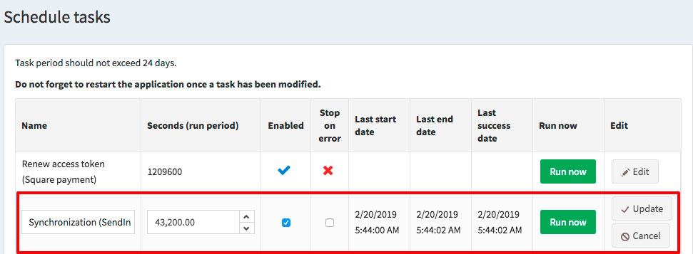
發送交易郵件
前往 交易郵件 (Transactional emails) 面板，透過 Brevo SMTP 發送您的交易郵件。
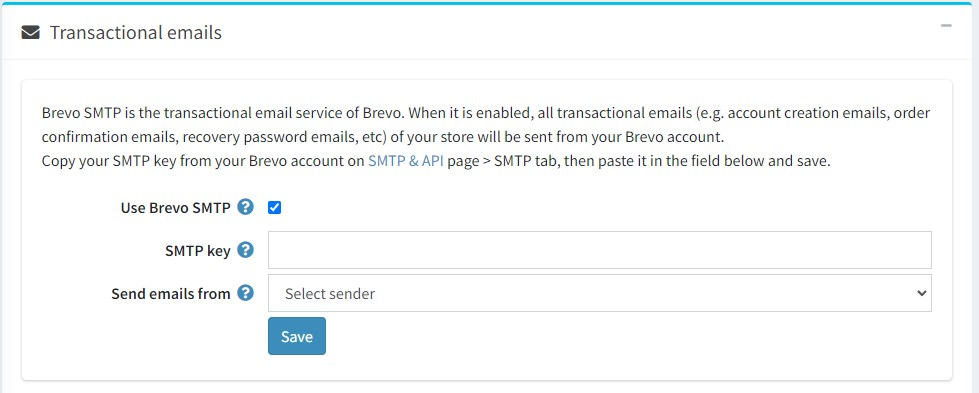
- 勾選 使用 Brevo SMTP (Use Brevo SMTP) 核取方塊。
- 貼上您的 SMTP 密碼，該密碼可在 here 找到。
- 從下拉式選單中，選擇您希望用來發送郵件的寄件人。
- 點擊 儲存 (Save) 按鈕。
接著您應該可以看到郵件通知清單。此清單列出了您所發送的所有交易郵件（例如訂單確認郵件）。
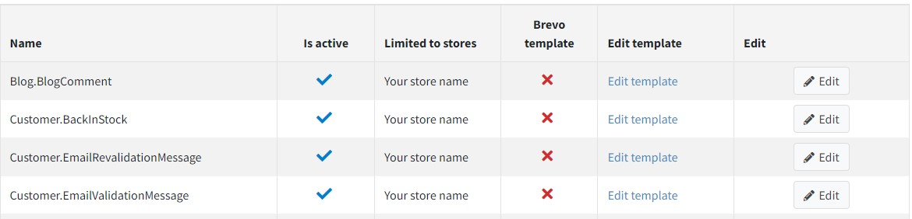
對於每個範本，您可以：
- 選擇它是啟用還是停用狀態。
- 選擇使用預設的 nopCommerce 範本或 Brevo 範本。若要進行此操作：
- 點擊 編輯 (Edit) 按鈕
- 從下拉選單中選擇您的範本
- 點擊 更新 (Update)
- 編輯其內容。
Note
如果您 已經選取 了 Brevo 郵件範本 (Brevo email template)，請點擊 編輯範本 (Edit template)，以便在您的 Brevo 帳戶中編輯範本內容。 如果您 尚未選取 Brevo 郵件範本，點擊 編輯範本 (Edit template) 將會把您重新導向至 nopCommerce 管理後台的訊息範本編輯頁面。深入瞭解訊息範本編輯流程 here。您也可以從該頁面發送測試郵件以檢查內容。請注意，每封測試郵件都會消耗郵件額度。
發送簡訊
前往 SMS 面板，除了電子郵件外，您還可以向顧客發送簡訊通知。
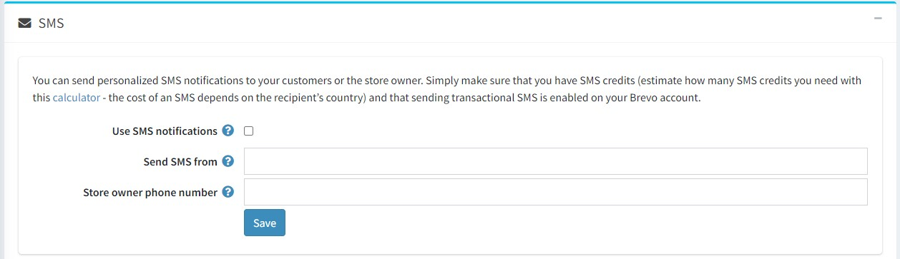
- 勾選 使用簡訊通知 (Use SMS notifications) 核取方塊。
- 輸入英數字組成的寄件者名稱（最多 11 個字元）。
- 輸入您的電話號碼。
- 點擊 儲存 (Save) 按鈕。
若要向 Brevo 清單發送簡訊行銷活動：
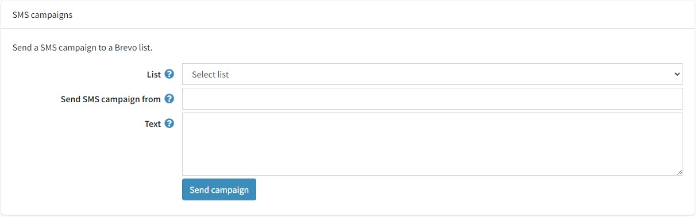
- 前往 簡訊行銷活動 (SMS campaigns) 區塊。
- 選擇要發送簡訊行銷活動的聯絡人 清單 (List)。
- 在 簡訊行銷活動發送者 (Send SMS campaign from) 欄位中輸入寄件者名稱。字元數限制為 11 個（需為英數格式）。
- 使用 文字 (Text) 欄位指定簡訊行銷活動的內容。單則訊息的字元數限制為 160 個。
- 點擊 儲存行銷活動 (Save campaign)。
外掛現已設定完成。您可以直接從 Brevo 存取所有交易型電子郵件的統計數據。
設定行銷自動化工作流程
Note
顧客必須透過電子郵件地址進行識別才能觸發工作流程，亦即顧客必須在 nopCommerce 商店登入帳戶，或是在結帳過程中輸入其電子郵件地址。
前往 行銷自動化 (Marketing Automation) 面板以安裝行銷自動化追蹤指令碼，藉此追蹤您商店中購物者的活動。當訪客註冊、潛在顧客放棄購物車、顧客完成購買或其他事件發生時，您將能夠透過傳送一系列電子郵件或簡訊來自動化您的行銷流程。
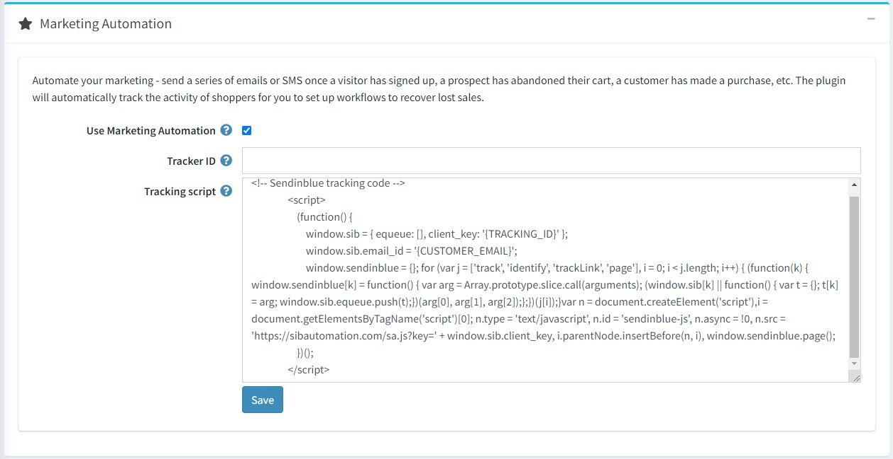
- 勾選 使用行銷自動化 (Use Marketing Automation) 核取方塊。
- 如果您的 Brevo 帳戶已啟用 行銷自動化平台 (Marketing Automation platform)，此外掛將會自動填入您的 追蹤器 ID (Tracker ID)。
- 將 Brevo 產生的追蹤指令碼貼上至 追蹤指令碼 (Tracking script) 欄位。{TRACKING_ID} 與 {CUSTOMER_EMAIL} 將會被動態取代。
- 確保 Brevo 小工具已在 設定 (Configuration) → 小工具 (Widgets) 頁面中啟用。
- 點擊 儲存 (Save) 按鈕。
一旦行銷自動化功能啟用並正常運作，您將會在您的 Brevo 帳戶中的 自動化 (Automation) → 紀錄 (Logs) → 事件紀錄 (Event logs) 下方找到下列紀錄：
- 頁面 (Page)
- 識別 (Identify)
- 追蹤事件 (Track events)
此外掛會自動追蹤購物者的活動，讓您能夠設定工作流程來挽回流失的銷售，以及設定訂單確認工作流程。系統會傳遞 3 個追蹤事件：
- cart_updated：當項目新增至購物車時傳遞。
- cart_deleted：當購物車被清空時傳遞。
- order_completed：當訂單完成時傳遞。這代表付款狀態為「已付款 (Paid)」。
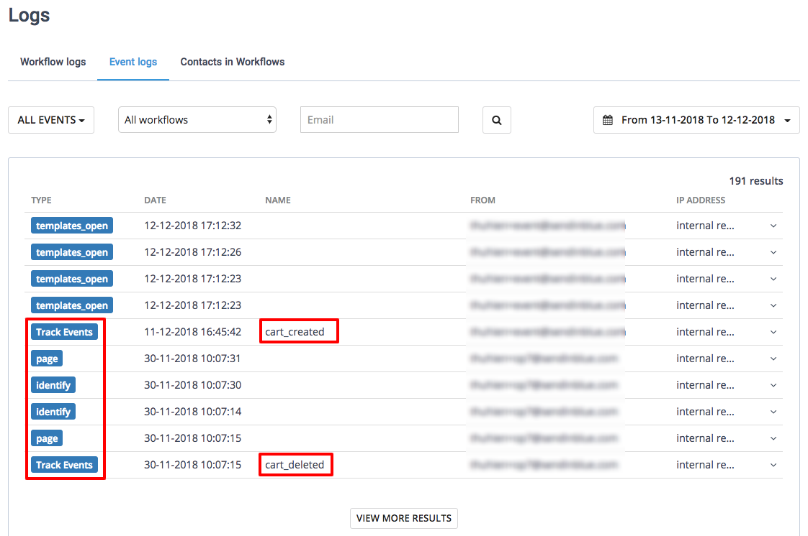
了解更多
- 了解如何 建立購物車未結帳提醒郵件。
- 了解如何 建立訂單確認郵件。